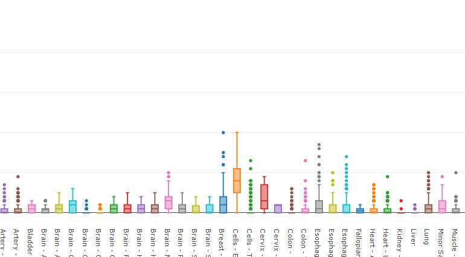
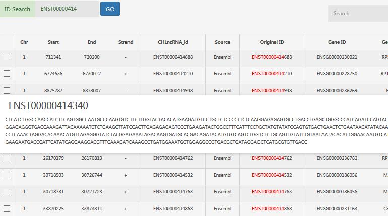

- 
-

- 
Introduction
HLPID Human lncRNA-protein interaction database (HLPID) aims to provide the genome-wide lncRNA-protein interactions and other related information about lncRNAs including single nucleotide polymorphisms (SNPs), mutations, and expression profiles. Long noncoding RNAs (lncRNAs) have important regulatory functions in various biological process and play important roles in diverse diseases especially cancers. Generally, lncRNAs may interact with certain proteins to exert their functions. Thus lncRNA-protein interactions are important for predicting and annotating the functions of lncRNAs. Currently, 94,817 human lncRNAs from Ensembl database and 156,773 human proteins from UniProt (20,172 Swiss-Prot proteins and 136,601 TrEMBL proteins) database were used to predict the interactions between lncRNAs and proteins in HLPID, which resulted in 34,055,953 lncRNA-protein interactions. Moreover, we mapped the SNPs from dbSNP database and the mutations from Cosmic database to those lncRNAs, and 53,339,380 SNPs and 6,603,805 mutations were assigned to one of the promoter, exon and intron regions of lncRNAs, respectively. Additionally, we conducted survival analysis for those lncRNAs using the expression data of 33 different cancers in The Cancer Genome Atlas (TCGA) database and provided the survival analysis results on corresponding page. The lncRNA expression profiles in 32 distinct tissue types including 55 tissue sites are also available in the Expression page based on the expression data of the Genotype-Tissue Expression (GTEx) project. Importantly, the relationships between lncRNAs and diseases calculated by XX are also accessible in the Disease page. Collectively, HLPID is a user friendly database and provides valuable resources regarding human lncRNAs, which can facilitate the functional annotation and other relevant researches about lncRNAs.